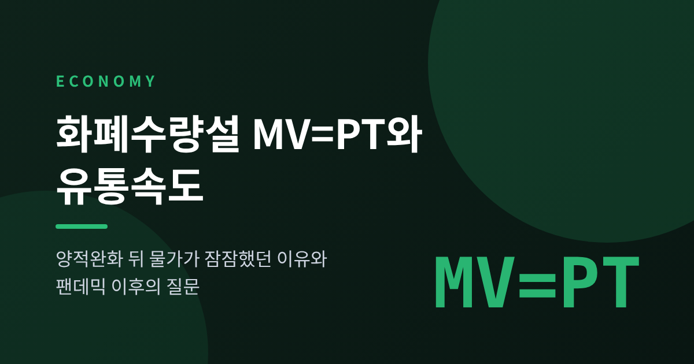
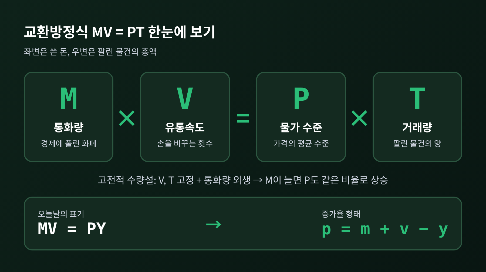
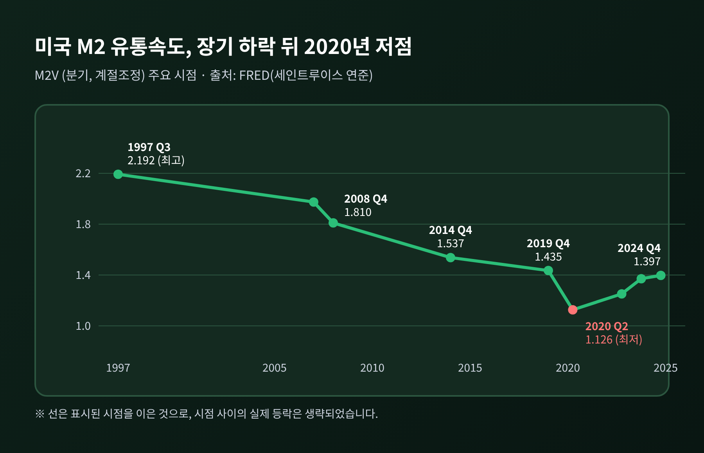
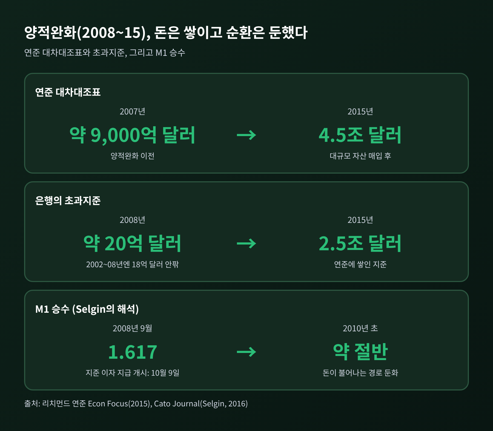
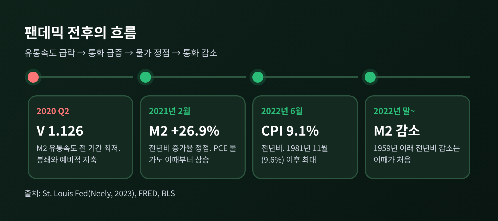
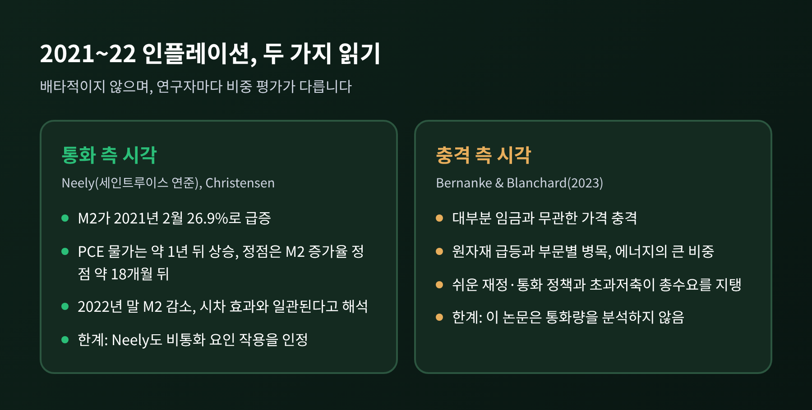

이번 글에서는 화폐수량설의 교환방정식 MV=PT와 화폐 유통속도를 정리해 보겠습니다. 통화량이 늘어도 유통속도가 떨어지면 물가는 생각만큼 오르지 않을 수 있고, 2008년 이후 양적완화가 그 대표적인 사례였습니다. 반대로 2020년대 팬데믹 이후의 물가 상승은 "화폐만으로 설명되는가"라는 질문을 다시 던졌습니다.
화폐수량설의 출발점은 식 하나입니다. MV=PT입니다.
M은 통화량입니다. V는 유통속도로, 화폐 한 단위가 일정 기간에 손을 바꾸는 횟수를 뜻합니다. P는 물가 수준, T는 거래량입니다. 이 식을 처음 도입한 사람은 뉴컴(1885)과 어빙 피셔로 알려져 있습니다.
좌변은 사람들이 쓴 돈의 총량이고, 우변은 팔린 물건의 총액입니다. 쓴 돈과 판 돈은 같을 수밖에 없으니, 이 식 자체는 항등식에 가깝습니다. 이론이 되는 순간은 가정을 얹을 때입니다.
고전적 수량설은 V와 T가 통화량과 무관하게 고정이라고 봅니다. 통화량은 바깥에서 정해지고, 인과는 MV에서 PT로 흐릅니다. 그러면 결론은 단순해집니다. M이 두 배가 되면 P도 두 배가 됩니다.
피셔는 1911년 『The Purchasing Power of Money』에서 물가 수준이 다섯 가지 요인에 전적으로 달려 있다고 썼고, 그중 둘이 유통속도였습니다. 다만 그 자신도 이 이론이 전환기에는 엄밀하게 성립하지 않는다고 인정했습니다. 출발부터 단서가 붙어 있었던 셈입니다.
오늘날에는 산출을 Y로 바꿔 MV=PY로 쓰고, 증가율 형태인 p = m + v − y로 읽는 경우가 많습니다. 물가 상승률은 통화량 증가율과 유통속도 변화율을 더하고, 실질 산출 증가율을 뺀 값이라는 뜻입니다.

유통속도가 정말 고정이라면 이 글은 여기서 끝납니다. 실제 데이터는 그렇지 않았습니다.
세인트루이스 연준(FRED)의 미국 M2 유통속도는 1997년 3분기에 2.192로 전 기간 최고였습니다. 2007년 4분기에는 1.974였고, 2008년 4분기 1.810, 2014년 4분기 1.537, 2019년 4분기 1.435로 꾸준히 내려갔습니다. 팬데믹이 터진 2020년 2분기에는 1.126까지 떨어져 전 기간 최저를 기록했습니다.
이후에는 반등했습니다. 2022년 4분기 1.252, 2023년 4분기 1.371, 2024년 4분기 1.397입니다. 가장 최근 값인 2026년 2분기는 1.418로 올라와 있습니다.
숫자를 풀어 말하면 이렇습니다. 1997년에는 달러 한 장이 1년에 약 2.2번 쓰였는데, 2020년 봄에는 약 1.1번으로 반토막이 났습니다. 같은 통화량이라도 경제 안에서 일으키는 거래의 크기가 달라진다는 뜻입니다.

유통속도가 변하는 이유는 하나로 정리되지 않습니다. 신뢰, 신용카드, 현금 사용 감소 같은 요인이 속도를 흔든다는 지적이 있습니다. 굿하트(Charles Goodhart)는 유통속도가 단기에 급변할 수 있다는 점을 대표적인 한계로 꼽았습니다.
2008년 금융위기 이후 연준은 대규모 자산 매입, 즉 양적완화를 진행했습니다. 연준 대차대조표는 2007년 약 9,000억 달러에서 2015년 4.5조 달러로 불어났습니다.
수량설대로라면 물가가 크게 뛸 법한 규모였습니다. 결과는 달랐습니다. 2008~15년의 막대한 본원통화 증가는 M2나 물가를 눈에 띄게 올리지 않았습니다.
이유로 가장 널리 언급되는 것이 초과지준입니다. 은행들은 새로 생긴 지준을 대출로 풀기보다 연준에 쌓아 두었습니다. 초과지준은 2008년 약 20억 달러에서 2015년 2.5조 달러로 늘었습니다. 2002~2008년에는 18억 달러를 거의 넘지 않았던 항목입니다.
연준이 2008년 10월 9일부터 지준에 이자를 주기 시작했다는 점에 주목하는 해석도 있습니다. 경제학자 조지 셀그린(George Selgin)은 이 이자가 대출보다 지준 보유를 매력적으로 만들어, 돈이 불어나는 통상의 경로를 막았다고 주장합니다. 그는 M1 승수가 2008년 9월 1.617에서 2010년 초 절반 수준으로 떨어졌다는 점을 근거로 듭니다. 다만 이는 한 연구자의 해석이라는 점을 밝혀 둡니다.
세 설명은 강조점이 다를 뿐 방향은 같습니다. 본원통화가 늘어난 만큼 돈이 경제를 돌지 않았다는 것입니다. 수식으로 보면 M이 늘어난 자리에서 V(와 통화승수)가 줄어 상쇄된 셈입니다.

밀턴 프리드먼은 "인플레이션은 어디서나 언제나 화폐적 현상"이라고 했습니다. 영문으로는 "Inflation is always and everywhere a monetary phenomenon"입니다. 1970년 강연 'The Counter-Revolution in Monetary Theory'에서 나온 표현으로 소개되는데, 이 글에서는 이 한 구절만 인용합니다.
그의 처방은 명료했습니다. 통화량을 일정한 비율로 늘리는 이른바 k% 준칙입니다. 유통속도가 안정적이어야 성립하는 처방이기도 합니다.
한계도 분명합니다. 비판의 요지는 대체로 세 가지입니다.
첫째, 유통속도가 불안정하다는 점입니다. 위의 데이터가 이를 보여 줍니다.
둘째, 통화량 목표는 비용이 클 수 있다는 점입니다. 영국이 1980년대 초 통화량을 목표로 삼았다가 1981년 침체가 필요 이상으로 깊었다는 평가가 많습니다.
셋째, 통화량은 중앙은행이 마음대로 정하는 값이 아니라는 점입니다. 굿하트는 통화량이 내생적이고, 통화 지표들이 서로 다르게 움직일 수 있다고 짚었습니다.
그렇다고 이론이 무너졌다는 이야기는 아닙니다. 굿하트도 같은 글에서 이를 대신할 인플레이션 이론이 아직 나오지 않았다고 적었습니다. 한계를 알고 쓰는 도구라는 쪽이 정확합니다.
2020년대의 경험은 두 해석이 맞부딪친 현장이었습니다.
먼저 통화 쪽 증거입니다. 세인트루이스 연준의 Christopher Neely에 따르면 미국 M2 증가율(전년비)은 2021년 2월 26.9%로 정점을 찍었습니다. 양적완화 시기나 1970~80년대 인플레이션기의 수치를 쉽게 넘어서는 값입니다. 2020년 2월부터 2022년까지 M2는 기록적으로 늘었습니다.
물가는 한 박자 늦게 움직였습니다. PCE 물가는 2021년 2월부터 오르기 시작했고, 2022년 6월에 정점을 찍었습니다. M2 증가율이 정점을 지난 지 약 18개월 뒤입니다. 소비자물가(CPI-U)는 2022년 6월 전년비 9.1%로, 1981년 11월의 9.6% 이후 가장 높았습니다.
2022년 말부터는 M2가 기록적으로 줄었습니다. 1959년 이래 M2가 전년비로 감소한 달은 그전에 없었다고 합니다. Neely는 이 흐름이 시차를 둔 M2의 영향과 일관된다고 썼습니다. 시장통화주의 쪽 논객 Lars Christensen도 2021~22년의 인플레이션이 2020~21년 중앙은행의 통화 공급 확대 없이는 불가능했다고 주장합니다.
다른 한편, 같은 시기를 공급·수요 충격으로 읽는 연구가 있습니다. 버냉키와 블랜차드의 2023년 논문은 2021년부터의 급등 대부분이 임금과 무관한 가격 충격에서 비롯됐다고 분석했습니다. 원자재 가격 급등과 부문별 병목이 중심이었고, 에너지가 2021년 말~2022년 상반기 상승에서 큰 비중을 차지했습니다. 실제로 2022년 6월 CPI에서 에너지는 41.6%, 식품은 10.4% 올랐고 근원은 5.9%였습니다.
재정도 변수였습니다. 2020년 3월 2.2조 달러 CARES법, 같은 해 12월 9,000억 달러, 2021년 3월 1.9조 달러의 미국구제계획이 이어졌습니다. 세 패키지는 GDP 대비 2009년 경기부양법의 약 4.5배였다고 합니다.
그렇다면 유통속도는 어땠을까요. 굿하트는 2020년에 광의통화의 유통속도가 통화 증가만큼 빠르게 떨어지고 있다고 설명했습니다. 봉쇄로 인한 강제 저축과 예비적 저축 때문입니다. 그리고 경제가 재개되어 속도가 정상화되면 물가 압력이 생길 수 있다고 경고했습니다. 실제로 M2 유통속도는 2020년 2분기 1.126에서 2023년 4분기 1.371까지 회복됐습니다.

두 해석은 배타적이지 않습니다. 다만 버냉키·블랜차드 논문은 통화량을 분석 대상에 넣지 않았고, Neely도 비통화 요인이 함께 작용했음을 인정했습니다. 어느 쪽이 얼마를 설명하는지는 지금도 연구자마다 다릅니다.

정리하면 이렇습니다. MV=PT는 정확한 예측 공식이 아니라 질문을 정리하는 틀입니다.
통화량 M은 눈에 보이는 숫자이고, V는 사람들의 행동이 만들어 내는 숫자입니다. 양적완화 때는 V와 승수가 M의 증가를 상쇄했고, 팬데믹 때는 M의 증가와 V의 회복, 그리고 공급과 재정이 겹쳤습니다.
"화폐는 중요하지만, 화폐만으로는 충분하지 않다."
이 글에서 제가 가져가는 한 줄입니다. 다음에 통화량 증가 소식을 접하신다면 유통속도는 어디에 있는지 함께 물어보시길 권합니다. 이 글은 이론과 데이터를 설명하기 위한 것이며, 투자나 정책에 대한 권유가 아닙니다.
참고: 세인트루이스 연준(Neely, 2023), FRED M2V, 리치먼드 연준 Econ Focus(2015), Cato Journal(Selgin, 2016), BLS, PIIE/NBER(Bernanke·Blanchard, 2023), VoxEU(Goodhart, 2020), HET, Econlib, Economics Help.